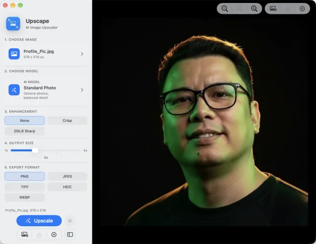
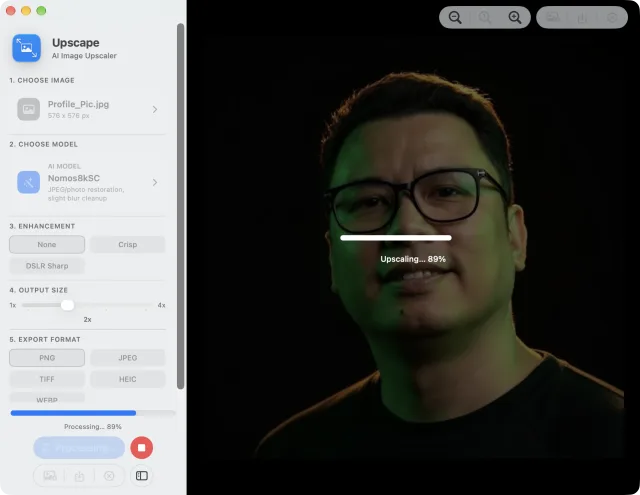
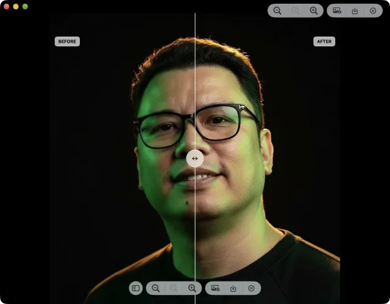
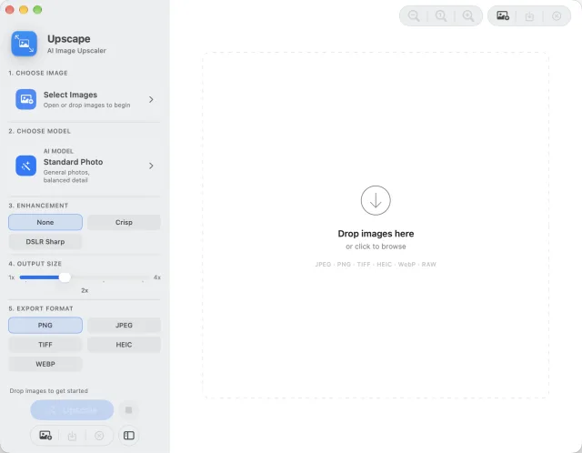

Runs locally with Core ML · No uploads · No account required

Choose an image, pick a model, set the output size, and export.

Upscaling runs on your Mac with live progress, and can be stopped at any point.
Upscape increases image resolution and rebuilds detail using AI models that run
entirely on your Mac. Photos, client work, product shots and personal images never leave the
machine — there is nothing to upload and nothing to sign into.
Features
Private by Design — your images stay on your Mac. Upscape processes files locally using Core ML, so photos, client work, product shots, and personal images are never uploaded for processing.
AI Upscaling up to 4x — increase image resolution while reconstructing realistic detail. Built for low-resolution photos, web images, artwork, screenshots, and compressed files.
Multiple Specialized Models — balanced photo enhancement, illustration cleanup, portrait-friendly smoothing, stronger edge detail, or JPEG and photo restoration.
Before and After Comparison — inspect your result with an interactive comparison slider before exporting. Check texture, edges, faces, and fine detail side by side.
Batch Upscaling — process multiple images in one run and save upscaled files automatically with clean filenames and your preferred output format.
Flexible Export Formats — export as PNG, JPEG, TIFF, HEIC, or WebP. Choose the format that fits publishing, archiving, sharing, or web use.
Optimized for Apple Silicon — Upscape uses Apple's Core ML framework to run efficiently on supported Mac hardware, including GPU, Apple Neural Engine, and CPU execution paths.
Models
Every image is different, so Upscape ships seven models. Pick the one that matches what you
are upscaling.
Standard Photo — balanced enhancement for everyday photos, product shots, screenshots, and mixed-content images.
Illustration — designed for anime, comics, digital art, clean linework, and flat-color artwork.
UltraSharp — adds stronger edge clarity for architecture, landscapes, objects, and highly detailed scenes.
NMKD Siax CX — a universal upscaling model for clean or lightly compressed images, mixed photos, and faces.
Nomos8kSC — photo restoration for JPEG compression, older web images, and slightly blurred camera shots.
Remacri — portrait-friendly upscaling for people, faces, fashion, and softer photographic subjects.
General v3 — conservative real-world photo enhancement that helps reduce halos, jagged edges, and artificial texture.

Drag the comparison slider to check texture, edges and faces before you export.
Use cases
Restore old web images
Improve compressed JPEGs
Upscale product photos
Enhance social media images
Clean up screenshots
Prepare images for print
Improve portraits and headshots
Upscale anime, comics, and illustrations
Create higher-resolution assets for design work
Privacy
Most AI upscalers are websites — you hand over the file and hope for the best. Upscape runs the
models on your own Mac, so the image never travels anywhere.
No uploads — every image is processed locally with Core ML.
No account — nothing to sign up for and nothing to log into.
Works offline — once installed with its models, Upscape needs no internet connection.

Open Upscape, drop in an image, and the five steps run top to bottom.
How to use
Choose an image, or drop several in for a batch run.
Pick the model that fits it — Standard Photo works for most images.
Set an enhancement level and the output size, up to 4x.
Upscale, then check the result in the before and after comparison.
Export as PNG, JPEG, TIFF, HEIC, or WebP.
FAQ
What is Upscape? — Upscape is an AI image upscaler for Mac. It increases image resolution and enhances detail using local Core ML models.
Does Upscape upload my images? — No. Upscape processes images locally on your Mac. Your files are not uploaded for image processing.
What image types does Upscape support? — Common image formats including JPEG, PNG, TIFF, HEIC, WebP, RAW, and other image files supported by macOS.
How much can Upscape upscale an image? — Upscape uses 4x AI upscaling models and can export at different output sizes depending on your chosen scale.
Which model should I choose? — Standard Photo for most images, Illustration for anime or artwork, Remacri for portraits, UltraSharp for hard edges and landscapes, Nomos8kSC for JPEG and photo restoration, and General v3 for conservative real-world enhancement.
Does Upscape work offline? — Yes. Once installed with its models, Upscape can process images locally without an internet connection.
Is Upscape good for blurry photos? — It can improve low-resolution and compressed images, but it cannot fully recover detail that was never present. It works best on images that are small, compressed, or pixelated rather than severely out of focus.
Can I process multiple images? — Yes. Upscape supports batch upscaling so you can process multiple files in one run.
What export formats are available? — PNG, JPEG, TIFF, HEIC, and WebP.
Who made Upscape? — Upscape is made by totoantonio.